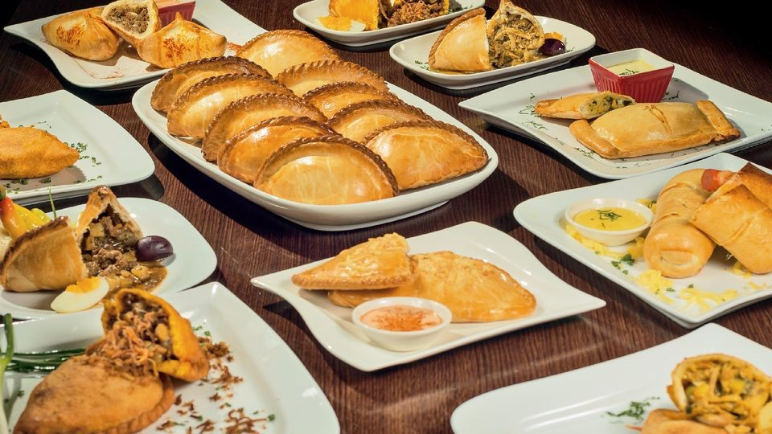
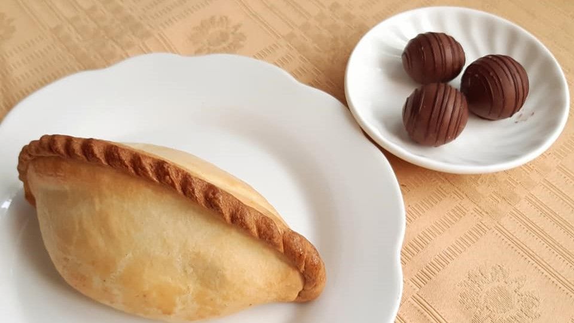

Nuestra historia tiene nombre propio

La Salteñeria fue fundada en 1950 por Dona Maria, una mujer apasionada por la cocina boliviana. Desde entonces, hemos estado sirviendo las mejores salteñas en Bolivia, hechas con amor y dedicación. Nuestra receta ha sido pasada de generación en generación, manteniendo la tradición viva.

La idea de la Salteñeria comenzó con un sueño de compartir la deliciosa comida boliviana con el mundo. Con una receta familiar y un amor por la cocina, Dona Maria abrió la primera Salteñeria en Sucre. Desde entonces, hemos crecido, pero siempre nos hemos mantenido fieles a nuestras raíces.
"Las mejores salteñas de Bolivia"
"Una tradición que perdura"